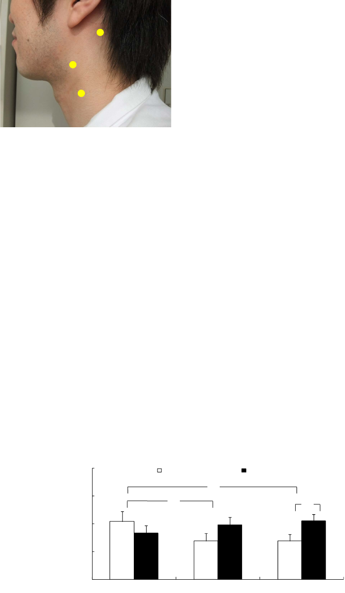

Open Journal of Medical Psychology, 2012, 1, 20-24
http://dx.doi.org/10.4236/ojmp.2012.13004
Published Online July 2012 (http://www.SciRP.org/journal/ojmp)
Effect of a Four-Week Self-Administered Acupressure
Intervention on Perceived Stress over the Past Month
Yasuhiro Honda, Akira Tsuda, Satoshi Horiuchi
Kurume University, Kurume, Japan
Email: ya-honda＠dmr.ac.jp
Received March 16, 2012; revised April 19, 2012; accepted May 17, 2012
ABSTRACT
The use of relaxation techniques in daily life is an effective means for the self-management of stress. Acupressure is a
traditional technique where pressure is applied to acupuncture points instead of puncturing the skin. Self-administered
acupressure is a potential method for dealing with stress. The effect of self-administered acupressure on anxiety has
been examined but whether it can reduce perceived stress over longer periods is unknown. This study aimed to examine
whether a self-administered, four-week acupressure intervention would reduce perceived stress over the past month.
Fifteen male and nine female college students (age, 28.9 ± 8.51 yr) majoring in acupuncture and moxibustion medicine
were randomly assigned to self-acupressure (AG) and control groups (CG). AG participants were instructed to conduct
five sessions of acupressure in the morning, midday, and night. Each session included pressing six acupressure points
on the neck (three points on the left and right side each) for five seconds. CG participants were asked to spend their
daily life as usual. The outcome was the perceived stress level during the past month, which was assessed using a reli-
able and valid four-item scale. Perceived stress was measured at baseline, two weeks later, and after intervention. The
stress level did not significantly differ between the two groups at baseline. In the AG, the stress level decreased from
baseline to two weeks later and remained constant until the end of intervention. The stress level was significantly lower
in the AG than in the CG only after intervention. These results provided initial evidence that self-administered acupres-
sure reduces perceived stress over the past month.
Keywords: Self-Administered Acupressure; Perceived Stress; Self-Care; Relaxation; Stress Management
1. Introduction
Perceived stress has negative effects not only on mental
and physical health but also on productivity [1,2]. With a
primary prevention focus, it is important to manage stress
by oneself [3]. Despite this, at least one in four American
adults does not engage in healthy activities to manage
stress [4]. This is also true of Korean [5] and Japanese
college students [6]. Thus, it is important to explore use-
ful tools for the self-management of perceived stress,
which could prevent stress-related health problems.
One approach to the self-management of perceived
stress is the use of relaxation techniques in daily life.
Major techniques include autogenic training, progressive
relaxation, and biofeedback. However, no relaxation
technique has been shown to be effective in all individu-
als. Moreover, it is important to determine whether other
relaxation techniques are effective [7]. This evaluation
will aid in designing relaxation techniques that suit each
individual’s specific needs.
A well-known relaxation technique is acupressure.
This treatment method is used in Chinese medicine. The
meridian theory assumes that energy (Qi) flows through
meridians, which are invisible circuitries of channels in
the body. The occurrence of Qi imbalance, i.e., if the
energy flow is too slow, fast, turbulent, or static, mental
and physical health is disturbed. Acupressure involves
the application of pressure on the traditional acupuncture
points instead of puncturing the skin, and aims to correct
such imbalances. Previous studies have suggested that
acupressure is an effective method for reducing stress [8];
anxiety [9]; depressive mood [10] as well as improving
general health [11].
Acupressure can be self-administered if users are
trained to press certain acupuncture points accurately.
Self-administered acupressure is cost-free and simple
because it only requires the pressing of acupuncture
points. Thus, we suggest that self-administered acupres-
sure could be an effective tool for stress self-manage-
ment.
Despite the potential of this method, very few studies
have examined the effects of self-acupressure on per-
ceived stress and anxiety [12]. Among these, Chen and
Chen [12] reported that the application of self-acupres-
C
opyright © 2012 SciRes. OJMP
Y. HONDA ET AL.
21
sure on the Sanyinjiao point (acupuncture point located
above the ankle) did not reduce anxiety when it was
measured using a visual analogue scale. They suggested
that anxiety may have not been reduced because the
anxiety level was already low. Das, Nayak, and Margaret
[13] reported that self-administered acupressure on
Neiguan point, Yangbai point, and Yintang point was
effective in reducing physical stress in high school stu-
dents. The design was, however, quasi-experimental. In
addition, self-administered acupressure has been applied
to the management of smoking [14], persistent cancer-
related fatigue [15], pain associated with dysmenorrhea
[12,16], relief of dyspnea [17], and pruritus and licheni-
fication [18]. No study has evaluated the effects of self-
administered acupressure on perceived stress for longer
periods such as one week or one month in a randomized
controlled trial. From a stress management perspective, it
is important to manage perceived stress that is relatively
stable over time. Demonstrating that self-administered
acupressure reduces perceived stress level over longer
periods will support the use of self-administered acu-
pressure as a new relaxation technique.
This study evaluated whether a four-week self-ad-
ministered acupressure intervention would reduce per-
ceived stress. We hypothesized that perceived stress lev-
els would decrease only in the participants who engaged
in self-administered acupressure.
2. Method
This study was initiated in the middle of January and
ended in February 2012. The final examination of the
semester was scheduled at the end of February. The con-
sent form and experimental protocol were approved by
the Ethical Committee at Kurume University, Fukuoka,
Japan. To test the efficacy of self-administered acupres-
sure, we selected college students majoring in acupunc-
ture and moxibustion medicine as the study’s participants.
The participants were considered suitable for an initial
evaluation of the efficacy of self-administered acupres-
sure because of the following reasons. Acupressure re-
quires that the acupuncture points are pressed accurately;
theoretically, its efficacy depends on how accurately
each participant presses the points. These participants
were expected to have greater knowledge of the positions
of the acupuncture points compared with students ma-
joring in other subjects. In addition, it was convenient to
select these students because the first author of this paper
was a member of the teaching staff in a college teaching
this subject.
We asked 21 men and 11 women to participate in this
study, but six men and two women refused. Finally, 15
Japanese male and nine female college students agreed to
participate in this study, and they provided complete data.
The mean age was 28.9 years (SD = 8.5). We confirmed
that all participants had no history of current or previous
physical or psychiatric illnesses and that they received no
medication. Because of the lack of published data, we
were unable to determine how representative they were
as a sample of Japanese college students majoring in
acupuncture and moxibustion medicine.
The outcome measure in this trial was the perceived
stress level, which was measured using the Stress sub-
scale of the Japanese language version of the Rhode Is-
land Stress and Coping Inventory (J-RISCI) [19]. The
subscale consists of four items and reflects how often a
person experiences stress during the previous month.
Each respondent rated how often they experienced stress
during the past month using a 5-point Likert scale (1 =
never and 5 = repeatedly). The score ranged from 4 to 20.
This measure was found to be reliable and valid [19].
Internal consistency reliability was evaluated using Cron-
bach’s alpha coefficient and found to be acceptable (α =
0.78). The measure was validated for depressive mood,
which was measured using the Japanese version of the
Center for Epidemiologic Studies for Depression Scale
[20]. Perceived stress is associated with a depressive
mood. The J-RISCI stress score was significantly and
positively associated with the depressive mood score (r =
0.61, p < 0.01), and its validity was supported.
The participants were randomly assigned to a self-
acupressure group (AG) and a control group (CG). We
first selected 12 students and assigned them to AG, while
the remaining students were assigned to CG. AG partici-
pants were instructed by the first author to complete five
self-acupressure sessions during the morning, midday,
and night. Each session involved pressing six acupres-
sure points on the neck (three points on the left and right
sides each) for five seconds. The order in which the
points were pressed depended on the participants. How
strongly these points were pressed was not defined ob-
jectively. Instead, the participants were asked to press the
points with sufficient pressure such that they felt com-
fortable. The first author provided a weekly message of
encouragement to the AG participants during his lectures
on the performance of self-administered acupressure. The
CG participants were asked to continue with their daily
life as usual, with no change in their life style. No incen-
tive was given to the participants. The J-RISCI Stress
subscale was tested at baseline, two weeks later, and after
intervention.
We selected three acupuncture points (Figure 1),
which are known as GB12, SI17, and LI18, according to
the World Health Organization Regional Office in the
Western Pacific [21]. These points were selected based
on several considerations. We aimed to reduce the per-
ceived stress level by improving the overall flow of Qi.
The main meridians of the body pass through the neck,
Copyright © 2012 SciRes. OJMP

Y. HONDA ET AL.
Copyright © 2012 SciRes. OJMP
22
4. Discussion
A
B
C
This study evaluated whether a four-week self-adminis-
t
ered acupressure course would reduce the perceived
stress level. The stress score decreased significantly in
the AG; it was significantly lower in the AG than in the
CG after intervention.
No significant stress-reducing effect of intervention
was evident at the middle of intervention, but a signifi-
cant effect was observed after the four-week intervention.
One possible explanation for the absence of any signifi-
cant effect at the middle of intervention was that the
outcome measure was the perceived level of stress during
the previous month, and the effect of intervention was
not clearly evident two weeks after intervention. The
results demonstrated that the application of self-admin-
istered acupressure on the GB12, SI17, and LI18 points
could be an effective tool for the self-management of
perceived stress. This study provides preliminary evi-
dence that self-administered acupressure can reduce the
perceived stress level over the past month.
Figure 1. The three acupuncture points on the left side of
the neck that each participant was requested to press. Note:
A, B, and C represent the GB12, SI17, and LI18 points,
respectively.
and these three points were located on the main meridi-
ans. Thus, it was expected that the application of acu-
pressure on these three points would improve the overall
flow of Qi and reduce the perceived stress level.
Our find
ings provided useful information with regard
to stress management for college students by demon-
strating that self-administered acupressure provides a
new option for relaxation. No single relaxation technique
has been demonstrated to be effective in all individuals;
therefore, a range of stress management interventions
meeting an individual’s specific needs should be avail-
able. Thus, the provision of a new relaxation technique
and demonstration of its efficacy are useful. Self-admin-
istered acupressure is a simple and cost-free method for
inducing a relaxation response, i.e., reduced sympathetic
activity. Chang and Jun [21] reported that college stu-
dents who received a 20 min acupressure session had a
significantly lower blood noradrenaline level, which is an
indicator of sympathetic activity, 30 min after the inter-
vention compared with the controls. In addition, acu-
pressure does not interfere with other stress management
techniques such as cognitive reframing. Thus, self-ad-
ministered acupressure can be a useful relaxation tech-
3. Results
Figure 2 shows the stress scores for AG and CG partici-
pants at three assessment points (baseline, two weeks
later, and after intervention). Analysis of variance with
period as a within-subject factor and group as between-
subject factor detected a significant effect of interaction
[F(2, 44) = 6.48, p < 0.01]. There were no significant
main effects of period [F(1, 22) = 0.64, n.s.] and group
[F(2, 44) = 0.64, n.s.]. Analyses of the interaction re-
vealed significant effects of period in the AG [F(2, 44) =
5.36, p < 0.01], but not in the CG [F(2, 44) = 1.76, n.s.].
These results indicated that the stress level decreased
significantly from baseline to two weeks later in the AG,
and it remained constant until the end of intervention (p
< 0.05). There was also a significant effect of group at
the end of intervention [F(1, 22) = 4.32, p < 0.05], but
not before it [F(1, 22) = 0.85, n.s.] and two weeks later
[F(1, 22) = 1.98, n.s.].
4
8
12
16
20
Baseline Two weeks later After intervention
Stress score
Self-acupressure group Control group
*
*
*
Figure 2. Differences in the perceived stress level scores of the self-acupressure and control groups at baseline, after two
weeks, and after intervention. *p < 0.05.

Y. HONDA ET AL.
23
nique and can be incorporated into stress management
practices.
This study focused on the perceived stress levels of
college students. Stress management is important in this
population. Graduating from high school and entering
college dramatically affects many aspects of daily life,
and most students experience perceived stress [7,22].
Greenberg [22] indicated that stress is perceived as one
of the most important health problems experienced by
college students, and it is necessary to help them to
manage their stress. Thus, a significant decrease in the
perceived stress levels of college students is important
from a school health perspective.
The main limitation of this study was that the partici-
pants were college students who were studying acupunc-
ture medicine. It is necessary to extend our findings to
other college students and populations. This extension
would be very important because our participants were
expected to have more extensive knowledge of the acu-
puncture points compared with college students majoring
in other subjects. Furthermore, it is necessary to replicate
our findings in populations other than college students.
Another limitation is that the participants may have had
some pressure to support the hypothesis because they
were also students of one of the authors. Thus, It is nec-
essary to consider such a possibility and make an effort
to exclude it.
5. Acknowledgements
This work was supported by Grant-in-Aid for Scientific
Research (B) (22330196) to AT. The authors would like
to thank Enago (www.enago.jp) for the English language
review.
REFERENCES
[1] M. S. Kopp, Á. Skrabski, A. Székely, A. Stauder and R.
Williams, “Chronic Stress and Social Changes, Socio-
economic Determination of Chronic Stress,” Annals of
the New York Academy of Sciences, Vol. 1113, 2007, pp.
325-338. doi:10.1196/annals.1391.006
[2] J. Watts and N. Robertson, “Burnout in University
Teaching Staff: A Systematic Literature Review,” Educa-
tional Research, Vol. 53, No. 1, 2011, pp. 33-50.
doi:10.1080/00131881.2011.552235
[3] K. E. Evers, J. O. Prochaska, J. L. Johnson, L. M.
Mauriello, J. A. Padula and J. M. Prochaska, “A Ran-
domized Clinical Trial of a Population- and Transtheo-
retical Model-Based Stress-Management intervention,”
Health Psychology, Vol. 25, No. 4, 2006, pp. 521-529.
doi:10.1037/0278-6133.25.4.521
[4] M. L. Robbins, J. L. Fava, G. J. Norman, W. F. Velicer, C.
A. Redding and D. A. Levesque, “Stage of Change for
Stress Management in Three Samples,” Paper Presented
at Nineteenth Annual Scientific Sessions of the Society of
Behavioral Medicine, New Orleans, 1999.
[5] S. Horiuchi, A. Tsuda, E. Kim, K.-S. Hong, Y.-S. Park
and U. Kim, “Relationships between Stage of Change for
Stress Management Behavior and Perceived Stress and
Coping,” Japanese Psychological Research, Vol. 52, No.
4, 2010, pp. 291-297.
doi:10.1111/j.1468-5884.2010.00444.x
[6] S. Horiuchi, A. Tsuda, H. Kobayashi and J. M. Prochaska,
“The Reliability and Validity of the Japanese Version of
Pro-Change’s Decisional Balance Measure for Effective
Stress Management (PDSM),” Japanese Psychological
Research, Vol. 54, No. 2, 2012, pp. 128-136.
doi:10.1111/j.1468-5884.2011.00490.x
[7] J. S. Greenberg, “Comprehensive Stress Management,”
12th Edition, McGraw-Hill Companies, New York, 2010.
[8] A. Fassoulaki, A. Paraskeva, K. Patris, T. Pourgiezi and
G. Kostopanagiotou, “Pressure Applied on the Extra 1
Acupuncture Point Reduces Bispectral Index Values and
Stress in Volunteers,” Anesthesia & Analgesia, Vol. 96,
No. 3, 2003, pp. 885-890.
[9] A. Kober, et al., “Auricular Acupressure as a Treatment
for Anxiety in Prehospital Transport Settings,” Anesthe-
siology, Vol. 98, No. 6, 2003, pp. 1328-1332.
doi:10.1097/00000542-200306000-00005
[10] H. S. Kang, S. R. Sok and J. S. Kang, “Effects of Merid-
ian Acupressure for Stroke Patients in Korea,” Journal of
Clinical Nursing, Vol. 18, No. 15, 2009, pp. 2145-2152.
[11] F. Kashefi, M. Khajehei, A. R. Ashraf and P. Jafari, “The
Efficacy of Acupressure at the Sanyinjiao Point in the
Improvement of Women’s General Health,” Journal of
Alternative and Complementary Medicine, Vol. 17, No.
12, 2011, pp. 1141-1147. doi:10.1089/acm.2010.0589
[12] H. M. Chen and C. H. Chen, “Effects of Acupressure at
the Sanyinjiao Point on Primary Dysmenorrhoea,” Jour-
nal of Advanced Nursing, Vol. 48, No. 4, 2004, pp. 380-
387. doi:10.1111/j.1365-2648.2004.03236.x
[13] R. Das, B. S. Nayak and B. Margaret, “Acupressure and
Physical Stress among High School Students,” Holistic
Nursing Practice, Vol. 25, No. 2, 2011, pp. 97-104.
[14] L. Leung, T. Neufeld and S. Marin, “Effect of Self-Ad-
ministered Auricular Acupressure on Smoking Cessation:
A Pilot Study,” BMC Complementary and Alternative
Medicine, Vol. 12, No. 1, 2012, p. 11.
doi:10.1186/1472-6882-12-11
[15] S. M. Zick, S. Alrawi, G. Merel, B. Burris, A. Sen, A.
Litzinger and R. E. Harris, “Relaxation Acupressure Re-
duces Persistent Cancer-Related Fatigue,” Evidence-
Based Complementary and Alternative Medicine, 2011,
Article ID 142913. doi:10.1155/2011/142913
[16] C. L. Wong, K. Y. Lai and H. M. Tse, “Effects of SP6
Acupressure on Pain and Menstrual Distress in Young
Women with Dysmenorrheal,” Complementary Therapy
in Clinical Practice, Vol. 16, No. 2, 2010, pp. 64-69.
[17] S. H. Maa, D. Gauthier and M. Turner, “Acupressure as
an Adjunct to a Pulmonary Rehabilitation Program,”
Journal of Cardiopulmonary Rehabilitation, Vol. 17, No.
4, 1997, pp. 268-276.
doi:10.1097/00008483-199707000-00008
Copyright © 2012 SciRes. OJMP
Y. HONDA ET AL.
24
[18] K. C. Lee, et al., “Effectiveness of Acupressure on Pruri-
tus and Lichenification Associated with Atopic Dermatitis:
A Pilot Study,” Acupuncture Medicine, Vol. 30, No. 1,
2012, pp. 8-11. doi:10.1136/acupmed-2011-010088
[19] S. Horiuchi, A. Tsuda, Y. Tanaka, J. Yajima and S. Tsuda,
“Development of the Japanese Version of the Rhode Is-
land Stress and Coping Inventory: Examination of Reli-
ability and Validity,” Behavioral Science Research, Vol.
47, No. 1, 2008, pp. 37-46 (in Japanese).
[20] S. Shima, T. Shikano, T. Kitamura and M. Asai, “A New
Self-Report Depression Scale,” Psychiatry, Vol. 27, No. 6,
1985, pp. 717-723 (in Japanese).
[21] S. B. Chang and E. M. Jun, “Effects of SP-6 Acupressure
on Dysmenorrhea, Cortisol, Epinephrine, and Norepi-
nephrine in the College Students,” Taehan Kanho Hakhoe
Chi, Vol. 33, Vol. 7, 2003, pp. 1038-1046 (in Korean).
[22] J. S. Greenberg, “A Study of the Effects of Stress on the
Health of College Students: Implications for School
Health Education,” Health Education Research, Vol. 15,
No. 5, 1984, pp. 11-15.
Copyright © 2012 SciRes. OJMP